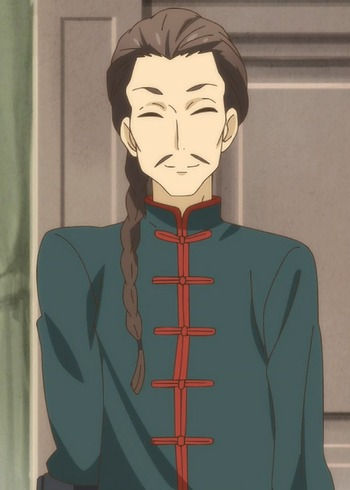

Tsuyoshi Aoki is a Japanese voice actor. He is affiliated with Aksent.
- Gender: Male
- Birthday: May 30, 1977
- Hometown: Tokyo, Japan

|
|---|
| |
Tsuyoshi Aoki is a Japanese voice actor. He is affiliated with Aksent.
|
|
|---|
|  | Fei | By the Grace of the Gods | Fei is a merchant and assassin from the country of Glimar. He is the father of Li Ling. He can not feel comfortable unless he wears hidden weapons. He is currently a receptionist and guard at Ryoma's Laundry Service. |
Go Back to Main Page |
Go Back to Homepage |
|
|
|
OR |
|